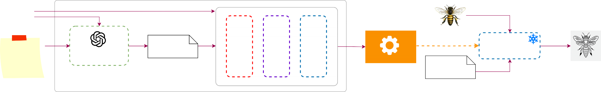
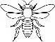

Stable Diffusion
(Anything V3)
Scraped Tactile Image
Create a tactile graphic of a [object], specifically ...
Prompt Template
Chat GPT & Dall-E
Create a tactile image of a bee, specifically ...
Class Specific Prompt
LoRA
DreamBooth
Fine-Tuned Adapter
Natural Image
Create a tactile image of a bee, specifically ...
Prompt
Stable Diffusion
Generated Tactile

